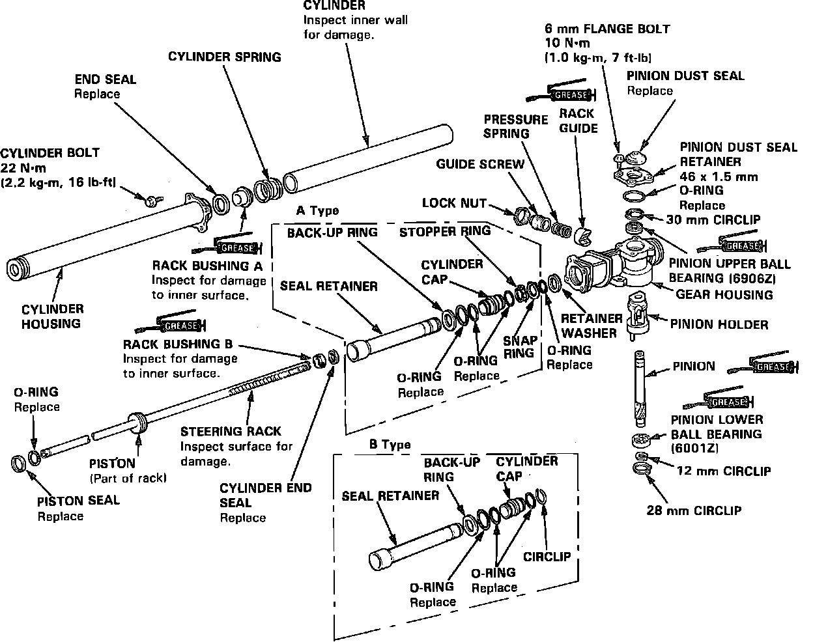
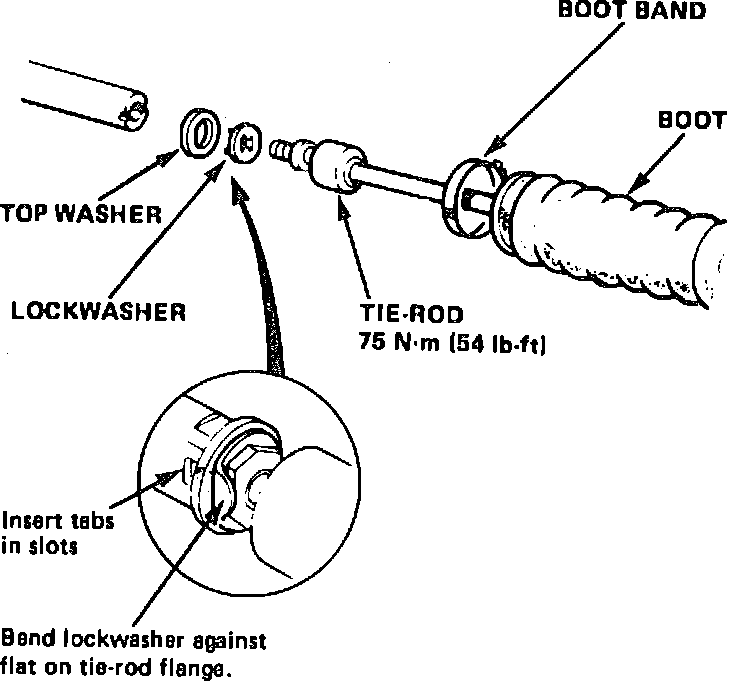

Power Steering Gear Service
Disable coded theft protection system as described in Accessories and Optional Equipment / Antitheft and Alarm Systems / Service and Repair. On models equipped with airbag, disable airbag system as described in Air Bags and Seat Belts / Air Bags (Supplemental Restraint Systems) / Airbag System Disarming.A Supplemental Restraint System (Airbag) is included within the steering wheel hub. The battery ground cable must be disconnect and isolated before performing this procedure. Failure to do so may result in accidental deployment and personal injury.
All electrical harnesses for this system are covered with a yellow outer insulation, with related components located in the steering column, center console, dash panel and front fenders. It is recommended that only authorized personnel work on vehicles with this type of restraint system.
When performing service procedures note the following:
1. Install piston seal ring using tool No. 07GAG-SD40100 or equivalent.
2. Seat piston seal ring using tool No. 07GAG-SD40200 or equivalent.
3. Install cylinder end seal using tool No. 07GAG-SD40300 or equivalent.
4. Install cylinder using guide tool No. 07GAG-SD40400 or equivalent.
5. Torque gear housing attaching bolts to 8 ft. lbs.
6. Torque rack guide screw to 2-2.9 ft. lbs. before backing it off 15-25°
DISASSEMBLY
Fig. 14 Power Steering Gear Exploded View:

Note installation position of components as they are removed, and keep all components in order to ensure proper assembly.
1. Remove control unit, then carefully clamp steering gear in vise.
2. Remove equalizer tube, loosen tie rod boot retaining bands, then pull boots away from gear housing.
3. Bend back tie rod locking washers, hold rack with suitable wrench, then remove tie rods and lock washers.
4. Push right end of rack back into cylinder to prevent damage to sealing surface.
5. Remove rack guide screw locknut, guide screw, spring and plunger, Fig. 14.
6. Remove 28mm snap ring from bottom of gear housing, then drive pinion assembly from housing using soft faced mallet.
7. Remove 4 cylinder housing retaining bolts, then slide cylinder housing off rack.
8. Remove O-ring, back-up ring, steering rack bushing A and the cylinder spring, Fig. 14, then remove end seal from cylinder housing, taking care not to damage housing.
9. Remove cylinder, seal retainer and rack assembly from housing, then remove retainer washer.
10. Remove gear housing cap and seal from housing, then press pinion seal from cap.
11. Remove pinion holder snap ring, pinion holder and upper pinion bearing from gear housing.
12. Remove cylinder and seal retainer from rack.
13. Disassemble seal retainer as follows:
a. On models with Type A retainer, remove O-ring, snap ring and stopper ring, then the cylinder cap, Fig. 14.
b. On models with Type B retainer, remove O-ring and circlip cylinder cap, Fig. 14.
c. On all models, remove remaining O-ring, rack end bushing B and the end seal, Fig. 14.
14. Carefully pry piston sealing ring and O-ring from rack piston.
INSPECTION
1. Clean all components with suitable solvent and blow dry with compressed air.
2. Inspect sliding surfaces of all components and replace any that are damaged, scored or excessively worn.
3. Inspect rack and pinion teeth for damage and wear, and replace as needed.
4. Inspect pinion shaft ball bearings, and replace if noisy or loose. To replace lower bearing, remove snap ring and remove bearing using suitable puller.
5. Inspect needle bearings in housing and pinion holder, and replace as a matched set if needed. Remove and install bearings using suitable drivers, and pack bearings with suitable grease prior to assembly.
ASSEMBLY
Replace all O-rings and seals, and coat friction surfaces with power steering fluid during assembly.
1. Install new O-ring on rack piston with narrow side facing outward.
2. Install piston sealing ring as follows:
a. Coat ring guide 07974-SA50100 or equivalent with power steering fluid and slide guide over rack big end first.
b. Install new sealing ring on guide tool, then slide ring over tool into position groove.
c. Coat sealing ring and inside of sizing tool 07974-SA50200 or equivalent with power steering fluid, then slide sizing tool onto rack and over sealing ring.
d. Rotate tool while moving it up and down to seat piston ring, then remove tool.
3. Coat cylinder cap O-rings with grease, then install O-rings on cap.
4. Install back-up ring then slide cylinder cap onto seal retainer.
5. On models with Type A retainer, install stopper ring, snap ring and new O-ring on seal retainer, Fig. 14.
6. On models with Type B retainer, install circlip and new O-ring on seal retainer, Fig. 14.
7. On all models, coat sliding surface of rack bushing B with grease, then install bushing on rack with grooved side facing rack piston.
8. Grease sliding surface of cylinder seal, then install seal on guide tool 07975-SA50300 or equivalent with grooved side facing tool.
9. Grease steering rack, then slide seal and tool assembly over rack with tool flange facing piston, ensuring that slot in tool is opposite rack teeth.
10. Remove guide from seal, spread ends of guide and remove guide from rack.
11. Install seal retainer assembly on rack, then press cylinder end seal and rack bushing into end of retainer.
12. Position retainer washer in housing, then insert rack and seal retainer assembly into gear housing and seat assembly against washer.
13. Coat inside surface of cylinder with power steering fluid, slide cylinder over rack, and press cylinder into housing until seated.
14. Coat inner surface of rack bushing A with power steering fluid and grease rack end guide, then install cylinder spring, rack end bushing A and cylinder end guide on rack.
15. Coat inside of cylinder housing with power steering fluid, then seat cylinder end seal in housing with grooved side of seal facing outside of cylinder.
16. Install O-ring and back-up ring on housing, position cylinder housing on gear housing ensuring that rack bushing A is properly aligned, then install retaining bolts hand tight.
17. Remove rack end guide and press rack into cylinder, press cylinder and rack housings together to ensure proper alignment, then torque cylinder housing bolts to 16 ft. lbs.
18. Install upper pinion bearing in housing using suitable drivers, ensuring that sealed side of bearing faces outward.
19. Insert pinion holder into gear housing, then install snap ring with tapered side facing outward.
20. Press new bearing onto pinion shaft with shielded side facing away from pinion, then install new snap ring and pack bearing with grease.
21. Support pinion holder with suitable spacer, then seat pinion in holder, taking care not to damage pinion shaft.
22. Secure pinion assembly with 28mm snap ring.
23. Install new pinion seal and O-ring on gear housing cap.
24. Install sleeve 07974-SA50600 or equivalent over pinion shaft, install gear housing cap, torque retaining bolts to 9 ft. lbs., then remove sleeve.
25. Install control valve assembly.
26. Coat rack guide with grease, install guide spring, guide screw and locknut, and adjust assembly as outlined in service section.
Fig. 15 Tie Rod Installation:

27. Install tie rod lock washers and tie rods, Fig. 15, ensuring that tabs on washers are seated in rack grooves. Hold rack and securely tighten tie rods, then bend washers against flats on tie rods.
28. Install tie rod boots and equalizer tube.
29. Restore coded theft protection system and rearm airbag.